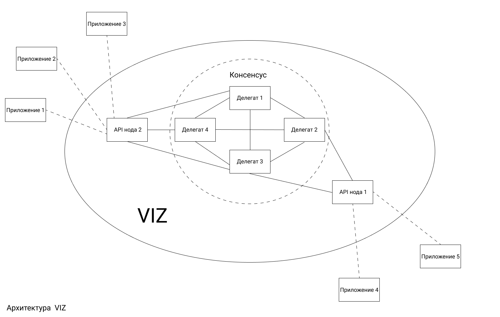

Что такое VIZ?¶
VIZ - это блокчейн платформа для разработчиков, которые стремятся создать социальные приложения, где пользователи могут получать криптовалюту за любые действия в блокчейне и за его пределами. В сущности, это поставщик блокчейн услуг, который позволяет хранить информацию, создавать новые аккаунты и распределять между ними награды.
VIZ состоит из двух основных технических компонентов: базового консенсуса на основе DPOS и программного интерфейса программирования(api). Алгоритм консенсуса гарантирует, что одни и те же транзакции записываются в одинаковом порядке на всех компьютерах, а также обеспечивает базовые действия блокчейна, такие как распределение эмиссии, создание аккаунтов, выплаты пользователям за деятельность. API представляет из себя набор плагинов, которые написаны на языке xC++, и доступ к ним через веб-интерфейсы.

Чем отличается VIZ от Ethereum, Bitcoin и подобных проектов¶
В отличии от многих криптопроектов, как Ethereum или Bitcoin, в которых используются алгоритмы PoW или PoS, VIZ использует более демократичный алгоритм - DPOS. Это значит, что в сети главную роль играют не майнеры, а инвесторы, которые голосуют за создателей новых блоков - делегатов. Делегаты гарантируют стабильную работу блокчейна и получают за это выплаты. Однако система голосования устроена так, что владельцы большей доли сети имеют больший вес*. Кроме того, только лучший 21 делегат(который получил наибольшее количество голосов) имеет право создавать новые блоки и управлять параметрами сети.
Чем VIZ отличается от Golos и Steem¶
Golos и Steem, так же как VIZ, созданы для социальных приложений. Однако два этих проекта задумывались как блог-платформы на блокчейне, где кураторы оценивают качество постов и решают какую выплату получит автор. Но VIZ позволяет получать награды за любые действия, даже за пределами блокчейна. Например, можно создать приложение, которое будет поощрять людей, заботящихся о пандах.
Чем VIZ отличается от EOS¶
EOS - это блокчейн для децентрализованных приложений, который поддерживает смарт-контракты. Своего рода, это операционная система, работающая на нескольких компьютерах одновременно. VIZ не поддерживает смарт-контрактов, он только обеспечивает базовую механику, с помощью которой разработчики могут создавать социальные прилоежния, где пользователи могут награждать друг друга. То есть VIZ больше подойдет для централизованных решений или сторонних блокчейн проектов, которые будут взаимодействовать с ним.
На самом деле, на EOS можно реализовать все, что есть в VIZ. Главное отличие будет в том, что EOS приложение будет хранить свой код на многих компьютерах и работать на них же. А приложение на базе VIZ использует блокчейн только как базу данных с механизмом наград за разные действия. Выбор между децентрализацией и централизацией зависит от целей приложений. Разработчик должен сам решить, что подойдет именно его приложению.
Кто владеет VIZ¶
У VIZ нет владельцев, каждый участник сети, будучи будучи обладателем ее доли, должен сам решать в какую сторону должен развиваться проект.
Кто поддерживает код VIZ¶
Код VIZ распространяется под MIT лицензией, это значит, что любой может вносить в код изменения.
Кто запустил блокчейн VIZ¶
Никто не знает кем была запущена сеть.